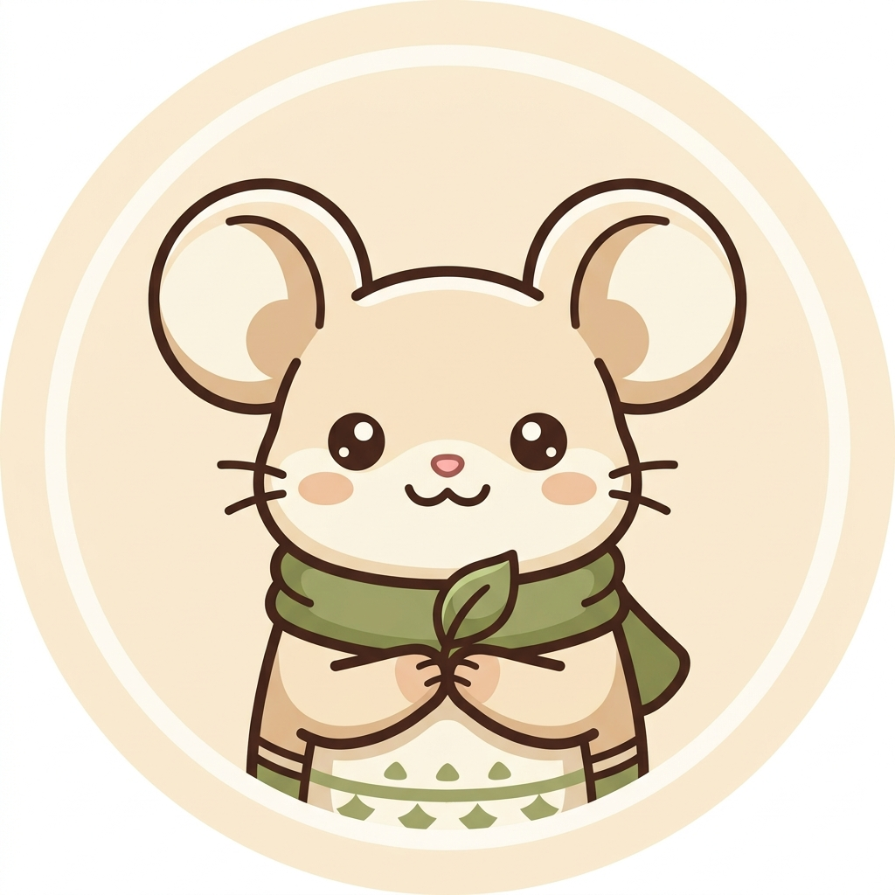

創作者 ＆ 終身學習者
溫暖・敏捷・持續累積在清晨或工作空檔沖一壺茶，專注於水溫與香氣的流動，在快節奏生活中保持平靜與敏銳觀察。
漫步於日常街角，透過鏡頭捕捉光影交會與生活留白，培養對色彩平衡與自然構圖的感知。
喜歡用純粹的代碼雕琢乾淨俐落的介面，隨時關注並動手嘗試有設計感、能增進生產力的開源工具。
堅持少即是多的極簡美學，全站使用單一 HTML 檔案封裝，無任何外部肥大框架，透過 CSS 變數實踐日系無印與和風深夜模式切換，極速秒開載入。
參與設計與工程跨領域交流活動，與同好探討如何結合自然美感與數位科技，定期分享實戰心得與筆記。